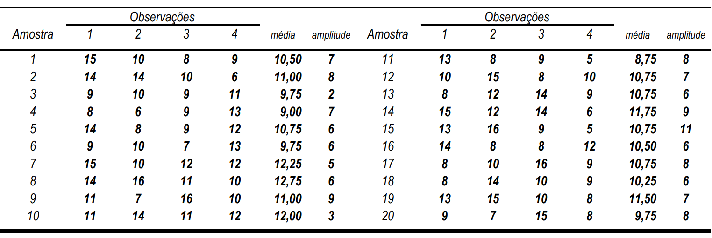
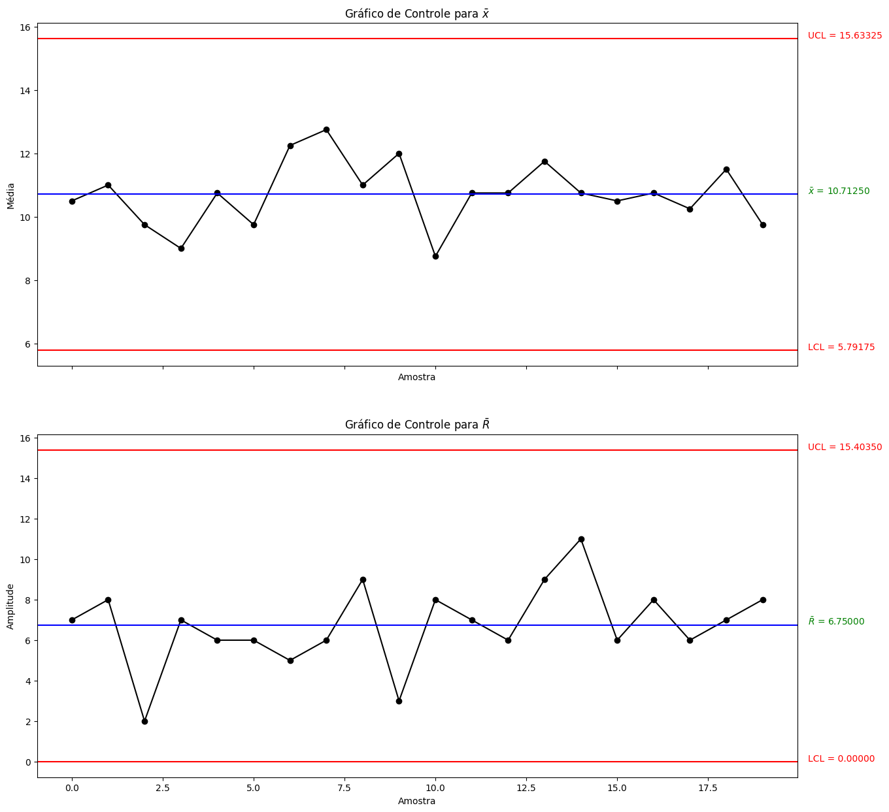
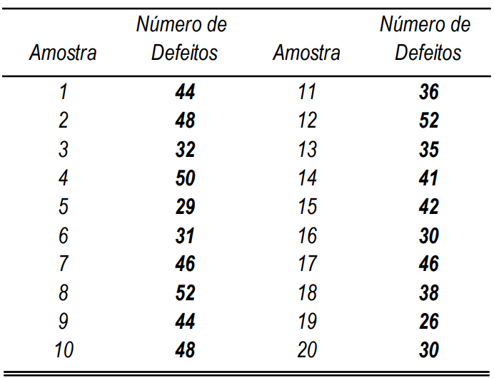
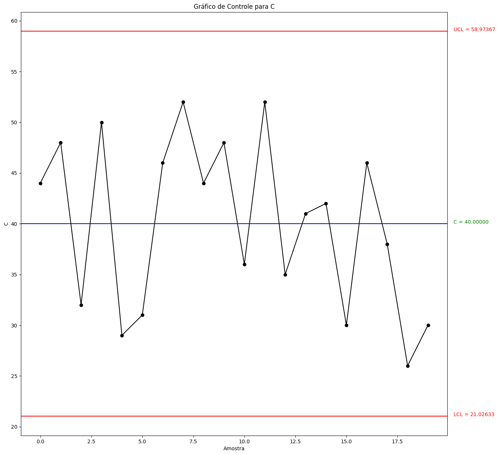

Atividade 4
Contents
Atividade 4#
# Imports
from IPython.display import display, HTML
import numpy as np
import pandas as pd
import scipy.stats as stats
import matplotlib.pyplot as plt
1. Em uma população normal com \(\sigma = 20\), uma amostra aleatória de tamanho n obtemos \(\bar{x} = 55,483\). Ao nível \(\alpha = 5%\), faça um teste unilateral para a hipótese nula \(\mu = 50\), quando:#
(i) n=25 (ii) n=36 (iii) n=64
desvio_padrao = 20
media_amostral = 55.483
significancia = .5
media = 50
tamanho_amostras = [25, 36, 64]
estatisticas = (media_amostral - media) / ( desvio_padrao/np.sqrt(tamanho_amostras))
pvalores = 1 - stats.norm.cdf(abs(estatisticas))
pd.DataFrame({'n': tamanho_amostras, 'Z': estatisticas, 'pvalor': pvalores}, index=['i', 'ii', 'iii'])
| n | Z | pvalor | |
|---|---|---|---|
| i | 25 | 1.37075 | 0.085226 |
| ii | 36 | 1.64490 | 0.049995 |
| iii | 64 | 2.19320 | 0.014146 |
2. O diâmetro do pino de metal usado em uma unidade de «disk-drive» é normalmente distribuída com média de 0,2508 e desvio padrão de 0,0005 unidades. A especificação de projeto do pino estabeleceu que o diâmetro deve ficar entre 0,2500 \(\pm\) 0,0015 unidades. Determine a fração de defeituosos produzidos de acordo com a especificação.#
media = .2508
desvio_padrao = .0005
spec = .25
desvio_spec = .0015
limites_spec = [spec - desvio_spec, spec + desvio_spec]
3. O comprimento do corpo do acendedor de cigarros utilizado em automóveis é monitorado em uma indústria utilizando gráficos de controle para \(\bar{x}\) e R. A tabela a seguir fornece as medidas de 20 amostras de tamanho 4. (As medidas foram codificadas em mm; isto é, 15 é 5,15)#

a) Construa os gráficos de controle para \(\bar{x}\) e R. O processo está sob controle?#
dados = pd.DataFrame({
'amostras': range(1, 21),
'medias': [10.5, 11, 9.75, 9, 10.75, 9.75, 12.25, 12.75, 11, 12, 8.75, 10.75, 10.75, 11.75, 10.75, 10.5, 10.75, 10.25, 11.5, 9.75],
'amplitudes': [7, 8, 2, 7, 6, 6, 5, 6, 9, 3, 8, 7, 6, 9, 11, 6, 8, 6, 7, 8]
})
A2_tabelado = .729
D2_tabelado = 2.059
D3_tabelado = 0
D4_tabelado = 2.282
media = dados.medias.mean()
amplitude_media = dados.amplitudes.mean()
desvio_padrao = amplitude_media/D2_tabelado
limite_superior_xbarra = media + A2_tabelado * amplitude_media
limite_inferior_xbarra = media - A2_tabelado * amplitude_media
limite_superior_r = amplitude_media * D4_tabelado
limite_inferior_r = amplitude_media * D3_tabelado
fig, [grafico_xbarra, grafico_r] = plt.subplots(2, figsize=(15,15), sharex=True)
def configura_grafico_de_controle(grafico, y, controle, limite_superior, limite_inferior, ylabel, clabel):
grafico.plot(y, linestyle='-', marker='o', color='black')
grafico.axhline(limite_superior, color='red')
grafico.axhline(controle, color='blue')
grafico.axhline(limite_inferior, color='red')
grafico.set_title(f'Gráfico de Controle para {clabel}')
grafico.set(xlabel='Amostra', ylabel=ylabel)
left, right = grafico.get_xlim()
grafico.text(right + 0.3, limite_superior, f'UCL = {limite_superior:.5f}', color='red')
grafico.text(right + 0.3, controle, f'{clabel} = {controle:.5f}', color='green')
grafico.text(right + 0.3, limite_inferior, f'LCL = {limite_inferior:.5f}', color='red')
return grafico
grafico_xbarra = configura_grafico_de_controle(grafico_xbarra, dados.medias, media, limite_superior_xbarra, limite_inferior_xbarra, 'Média', r'$\bar{x}$')
grafico_r = configura_grafico_de_controle(grafico_r, dados.amplitudes, amplitude_media, limite_superior_r, limite_inferior_r, 'Amplitude', r'$\bar{R}$')
plt.show();

4. Deseja-se construir um gráfico de controle para a linha de produção que fornece a tabela abaixo, para amostras de tamanho 100 de substratos de cerâmica.#

dados = pd.DataFrame({
'amostras': range(1, 21),
'defeituosos': [44, 48, 32, 50, 29, 31, 46, 52, 44, 48, 36, 52, 35, 41, 42, 30, 46, 38, 26, 30]
})
cbarra = dados.defeituosos.mean()
limite_superior_cbarra = cbarra + 3*np.sqrt(cbarra)
limite_inferior_cbarra = cbarra - 3*np.sqrt(cbarra)
fig, grafico_cbarra = plt.subplots(1, figsize=(15,15), sharex=True)
grafico_cbarra = configura_grafico_de_controle(grafico_cbarra, dados.defeituosos, cbarra, limite_superior_cbarra, limite_inferior_cbarra, 'C', 'C')
